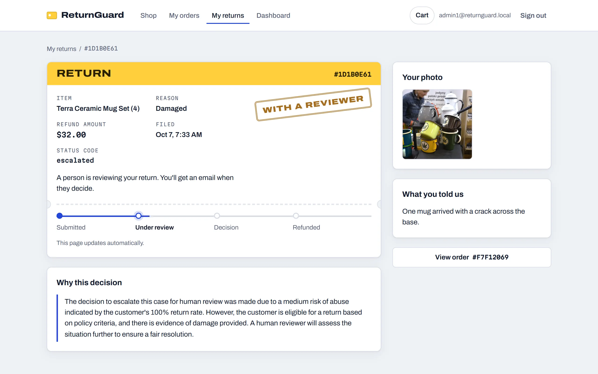
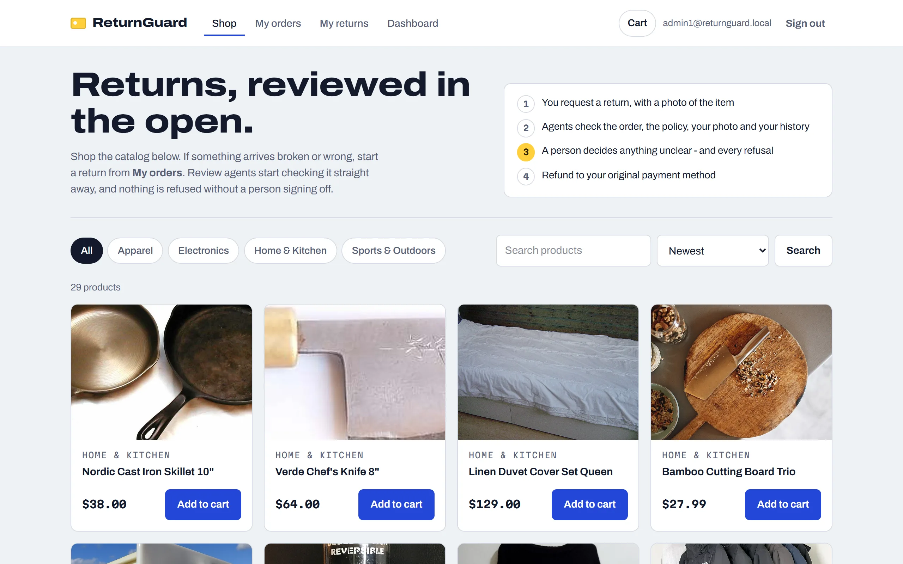
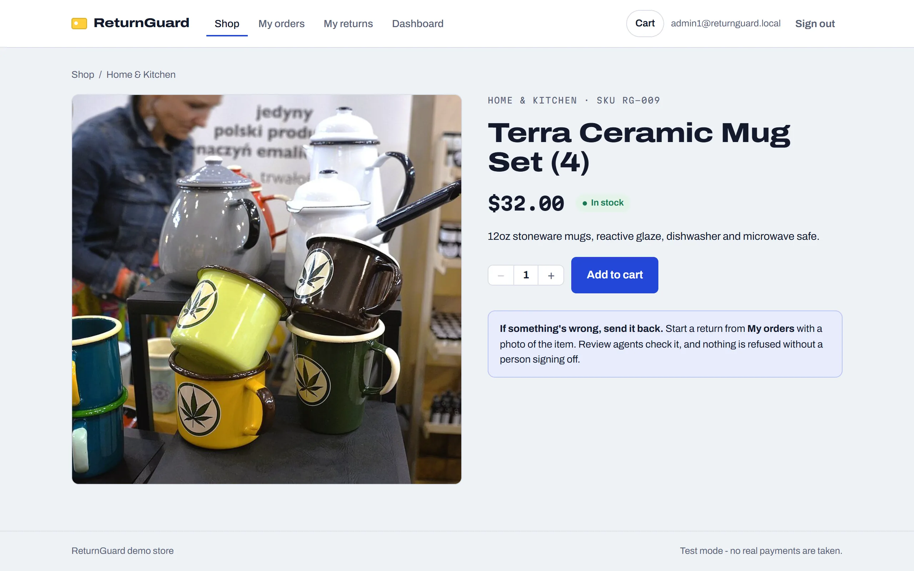
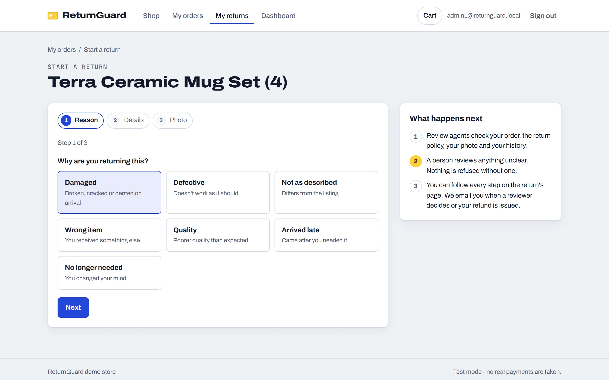
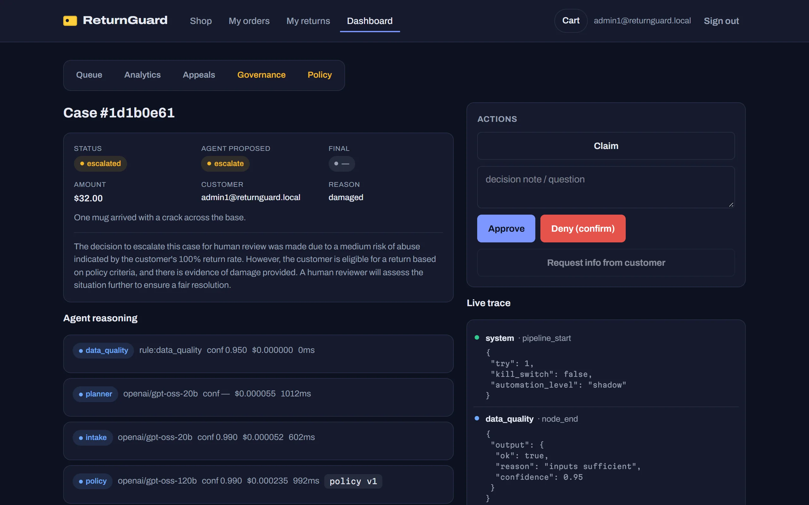
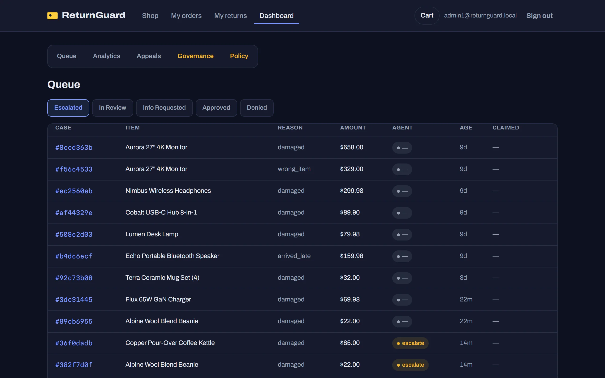
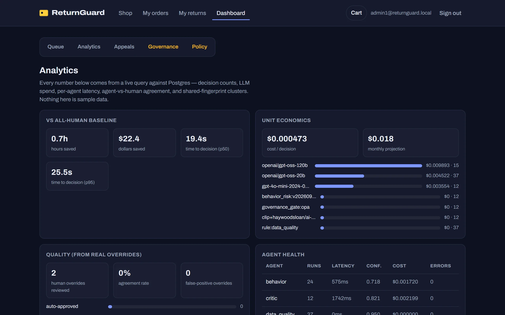
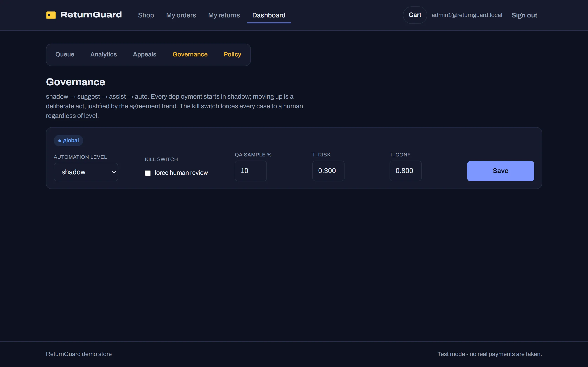
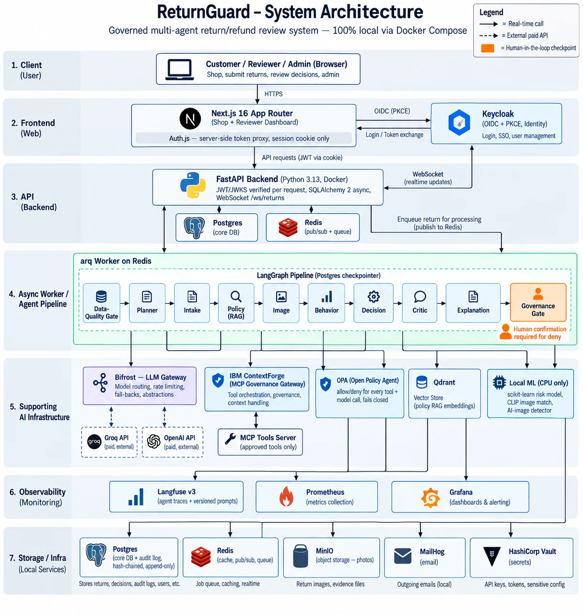

No automatic refusals
A proposed denial always becomes an escalation. Only a person’s explicit confirmation can deny — even at 96% model confidence.
Governed multi-agent AI · e-commerce returns
ReturnGuard reviews online-shop return and refund requests with ten specialised AI agents. They check the order, the store policy, the photo and the customer’s history — but nothing is refused without a person, large refunds always go to a human, and every decision can be traced to the exact model, prompt and policy that produced it.

The problem
“It arrived broken.” “Wrong item.” “Changed my mind.” Each request means checking the order, the return policy, the photo and the customer’s history. Some are fraud: AI-generated damage photos, serial returners, rings of accounts sharing an address or card.
Doing it all by hand is slow and expensive. Handing it all to a model is reckless — a model that can silently issue refunds can be talked into issuing refunds. ReturnGuard is the middle path: agents do the legwork, and the system only acts inside limits a human set.
How a return is reviewed
Every step records which model ran, a hash of its input, its output, confidence, tokens, cost and latency — and streams live to the reviewer’s screen.
Guardrails
A proposed denial always becomes an escalation. Only a person’s explicit confirmation can deny — even at 96% model confidence.
Risk below 0.30, confidence at least 0.80, no Critic veto, and under $250 — all at once, or a human decides.
One admin control sends every case to a person, checked fresh on every case — no restart.
Each agent has its own identity, tool grant, model grant and budget. The image agent can call zero tools — proven by trying.
A declined customer can appeal; it routes to a different reviewer, and the original one gets a hard rejection if they try.
Every human and agent action lands in a hash-chained audit log that can be re-verified at any time.
Screens
Real screenshots of the system running locally.







Architecture

Results
No mocked tests: plain scripts drive the live stack over HTTP and WebSocket and check the real database, storage and audit log. A full ten-agent review of a real return cost about $0.0012 in model calls.
| Check | What it proves on the live system | Result |
|---|---|---|
| verify_m1 | All 18 services healthy; database, cache, vector store, object storage, vault, LLM gateway, MCP gateway and policy engine reachable; schema at the latest migration | PASS |
| verify_m2 | Real Keycloak sign-up and token, an order that stores only the card’s last 4 digits, a return whose photo really lands in object storage | PASS |
| verify_m2_frontend | The shop and its OpenID Connect (PKCE) login flow | PASS |
| verify_m3 | A real LLM call through the gateway, with tokens, cost and latency logged and a live trace replayable over WebSocket | PASS |
| verify_m3_dlq | A case that crashes three times lands in a visible failed record and goes to a human — never retried forever | PASS |
| verify_m4 | The full agent graph: every step logged, policy retrieved from the vector store, tools called through the MCP gateway, the image agent exposed zero tools, the gate decided via OPA, no automatic denial | PASS |
| verify_audit_chain | Every audit-log hash recomputes; the chain is unbroken | PASS |
| verify_security | Prompt injection in the return text and inside an image cannot escalate privileges or force an approval; the image agent is denied every tool | PASS |
| verify_m5 | Reviewer claim, deny-with-confirmation, override logged, request-info round trip, refund settlement | PASS |
| verify_m6 | The README’s claims, URLs and commands hold against the running system | PASS |
HistGradientBoosting + isotonic calibration, on a synthetic dataset with injected fraud patterns (test set 1,360 cases).
Three real detectors compared on a small labelled sample (12 images); the best was kept.
Credits
The ReturnGuard system — its design, agent pipeline, backend, infrastructure and scenario catalogue — was built by Sudhanshu Gusain (data-guru0/Retail-FDE-Project-). The full history is kept in the repository.
localhost on Windows) and fixed it.